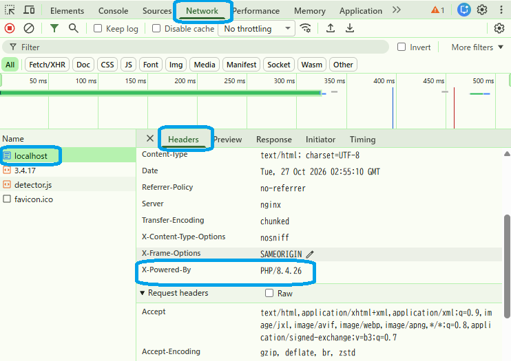

APHPの存在とバージョン情報の露出
expose_php=On では、レスポンスヘッダーに X-Powered-By が付く場合があります。
# まずスクリプトで確認する
python scripts/check_php_version.py
NG: X-Powered-Byヘッダーが公開されています: PHP/8.4.26（HTTP 200） NG: PHP 8.4.26 は最低要件 8.4.27 を満たしていません。
バージョンが公開されていること（NG）と、最低要件（8.4.27）を満たしていないことが分かります。
curl やブラウザでも、同じ X-Powered-By ヘッダーを確認できます。
# Windows PowerShell curl.exe -I http://127.0.0.1:8099/ # macOS / Linux curl -I http://127.0.0.1:8099/ # 確認箇所 X-Powered-By: PHP/...
ブラウザから確認する方法
- 1. 公開ページを新しいタブで開く
- 2. 画面上部に表示される PHP 8.x.x から、PHPの存在とバージョンを確認する
- 3. ブラウザの開発者ツールを開き、Network（ネットワーク）でページのレスポンスヘッダーを表示する
- 4. X-Powered-By: PHP/... が含まれるか確認する
